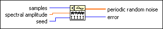
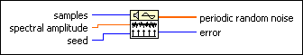
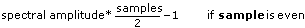
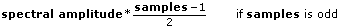

Periodic Random Noise VI
Owning Palette: Signal Generation VIs
Requires: Full Development System
Generates an array containing periodic random noise (PRN).

 Add to the block diagram Add to the block diagram |
 Find on the palette Find on the palette |
Owning Palette: Signal Generation VIs
Requires: Full Development System
Generates an array containing periodic random noise (PRN).

| Add to the block diagram |
Find on the palette |
 |
samples is the number of samples of the periodic random noise. The default is 128. |
 |
spectral amplitude is the magnitude of the frequency domain components of the periodic random noise. |
|
seed, when greater than 0, causes reseeding of the noise sample generator. The default is –1. LabVIEW maintains the internal seed state independently for each instance of this reentrant VI. For a specific instance of this VI, if seed is less than or equal to 0, LabVIEW does not reseed the noise generator, and the noise generator resumes producing noise samples as a continuation of the previous noise sequence. |
 |
periodic random noise is the output array containing periodic random noise. |
 |
error returns any error or warning from the VI. You can wire error to the Error Cluster From Error Code VI to convert the error code or warning into an error cluster. |
The output array contains all frequencies that can be represented with an integral number of cycles in the requested number of samples. Each frequency-domain component has a magnitude of spectral amplitude and random phase.
Another way of thinking of the output array of the Periodic Random Noise VI is that it is a summation of sinusoidal signals with the same amplitudes but with random phases. The unit of spectral amplitude is the same as the output periodic random noise and is a linear measure of amplitude, similar to other signal generation VIs.
The Periodic Random Noise VI generates the same periodic random sequence for a given positive seed value. The Periodic Random Noise VI does not reseed the random phase generator if seed is negative.
The output periodic random noise is bounded by the following values


You can use periodic random noise to compute the frequency response of a linear system in one time record instead of averaging the frequency response over several time records, as you must for nonperiodic random noise sources.
You do not need to window periodic random noise before performing spectral analysis because periodic random noise is self-windowing and therefore has no spectral leakage. This is because periodic random noise contains only integral-cycle sinusoids.